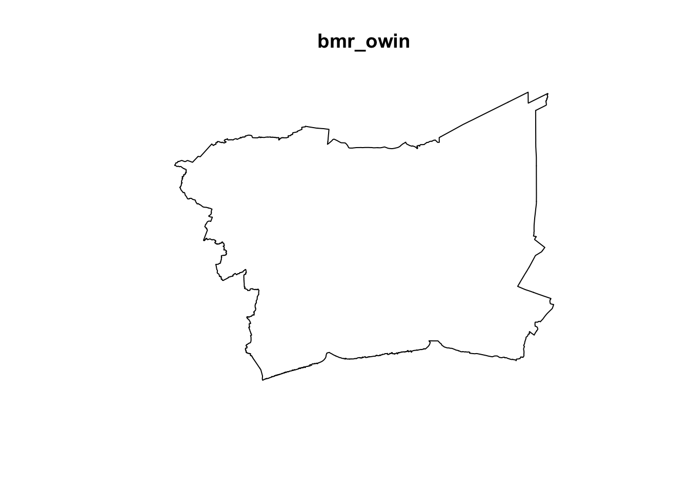
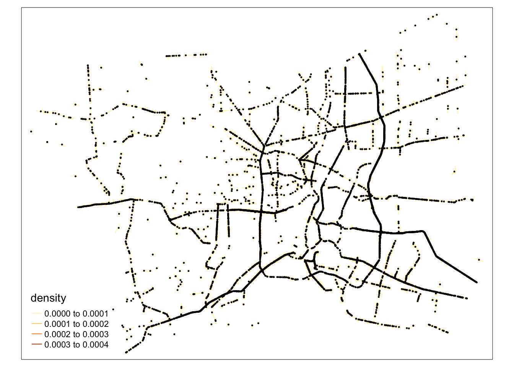

Click to view code
pacman::p_load(sf, spNetwork, tmap, tidyverse, dplyr, spatstat, knitr)OH NO!!!
There is a collapse after 1 day data processing!!
Error: vector memory limit of 16.0 Gb reached, see mem.maxVSize()!!!
Important thing to learn, even if shrinking data into 1/30, still try saveRDS!!!
Spatial Point Patterns Analysis (SPPA) has proven to be an effective tool in studying and identifying the factors that contribute to road traffic accidents. Previous research has highlighted its potential, particularly in exploring spatial distributions and correlations. However, much of this research has predominantly concentrated on either behavioral factors (such as driver behavior and road usage) or environmental factors (such as road conditions and weather). Temporal factors—such as seasonal variations, the day of the week, or specific times of day—have received limited attention, despite their potential influence on accident patterns. Addressing these temporal dimensions can offer a more comprehensive understanding of traffic accidents, contributing to more effective prevention strategies.
Here are the requirement of take-home_Ex01
pacman::p_load(sf, spNetwork, tmap, tidyverse, dplyr, spatstat, knitr)library(knitr)
# Create a table with package names and descriptions
package_info <- data.frame(
Package = c("sf", "spNetwork", "tmap", "tidyverse", "dplyr", "spatstat"),
Description = c(
"For importing, managing, and handling geospatial data",
"For network-based spatial analysis, including kernel density estimation on networks",
"For thematic mapping",
"For non-spatial data wrangling and general data analysis",
"For data manipulation and pipeline tools",
"For spatial statistics and point pattern analysis"
)
)
# Display the table using kable (knitr)
kable(package_info, col.names = c("Package", "Description"))| Package | Description |
|---|---|
| sf | For importing, managing, and handling geospatial data |
| spNetwork | For network-based spatial analysis, including kernel density estimation on networks |
| tmap | For thematic mapping |
| tidyverse | For non-spatial data wrangling and general data analysis |
| dplyr | For data manipulation and pipeline tools |
| spatstat | For spatial statistics and point pattern analysis |
For the purpose of this exercise, three basic data sets are needed, they are:
Thailand Road Accident [2019-2022] on Kaggle
All of them are spatial data
Now we’re loading both the event (acc), polygon (dm2) and road network (Road). Ensure that each layer is in the same CRS. (P.S. this step will overlap the Kfun, since too many points in the same location)
# List of BMR provinces
bmr_provinces <- c("Bangkok", "Nonthaburi", "Pathum Thani", "Samut Prakan", "Nakhon Pathom", "Samut Sakhon")
# Read and process the accident data
car_acc <- read_csv('data/Thailand_Road_Accident/thai_road_accident_2019_2022.csv') %>%
# Remove rows with missing longitude or latitude
filter(!is.na(longitude) & !is.na(latitude)) %>%
# Filter rows for BMR provinces
filter(province_en %in% bmr_provinces) %>%
# Create new columns
mutate(Month_num = month(incident_datetime),
Month_fac = month(incident_datetime, label = TRUE, abbr = TRUE),
Day = day(incident_datetime),
Day_of_week = wday(incident_datetime, label = TRUE),
incident_datetime = ymd_hms(incident_datetime),
clock = format(incident_datetime, "%H:%M:%S")) %>%
# Convert to an sf object
st_as_sf(coords = c("longitude", "latitude"), crs = 4326) %>%
# Reproject to UTM Zone 47N (for Thailand)
st_transform(crs = 32647)
# add later time analysis car_acc_time
car_acc_time <- car_acc
car_acc <- car_acc_time %>%
select(1, 5, 17:22)
car_accSimple feature collection with 12986 features and 7 fields
Geometry type: POINT
Dimension: XY
Bounding box: xmin: 591277.5 ymin: 1486846 xmax: 710166.1 ymax: 1576520
Projected CRS: WGS 84 / UTM zone 47N
# A tibble: 12,986 × 8
acc_code province_en Month_num Month_fac Day Day_of_week clock
<dbl> <chr> <dbl> <ord> <int> <ord> <chr>
1 571882 Nakhon Pathom 1 Jan 1 Tue 02:25:00
2 600001 Nonthaburi 1 Jan 1 Tue 03:00:00
3 605043 Samut Prakan 1 Jan 1 Tue 03:00:00
4 629691 Bangkok 1 Jan 1 Tue 03:05:00
5 571887 Nakhon Pathom 1 Jan 1 Tue 04:30:00
6 599234 Samut Prakan 1 Jan 1 Tue 04:45:00
7 599990 Samut Sakhon 1 Jan 1 Tue 05:30:00
8 612045 Nonthaburi 1 Jan 1 Tue 05:30:00
9 629689 Bangkok 1 Jan 1 Tue 05:42:00
10 607046 Pathum Thani 1 Jan 1 Tue 06:30:00
# ℹ 12,976 more rows
# ℹ 1 more variable: geometry <POINT [m]># Load administrative boundaries (adm2 level)
adm2 <- st_read(dsn = "data/tha_adm_rtsd_itos_20210121_shp", layer = "tha_admbnda_adm2_rtsd_20220121") %>%
st_transform(adm2, crs = 32647)Reading layer `tha_admbnda_adm2_rtsd_20220121' from data source
`/Applications/SMU/S3/ISSS-626/ISSS-626 ZOUJIAXUN/Take-home_Ex/Take-home_Ex01/data/tha_adm_rtsd_itos_20210121_shp'
using driver `ESRI Shapefile'
Simple feature collection with 928 features and 19 fields
Geometry type: MULTIPOLYGON
Dimension: XY
Bounding box: xmin: 97.34336 ymin: 5.613038 xmax: 105.637 ymax: 20.46507
Geodetic CRS: WGS 84adm2_time <- adm2
adm2 <- adm2_time %>%
select(1:3,11,20)Filter administrative boundaries for BMR provinces
bmr_boundaries <- adm2 %>%
filter(ADM1_EN %in% bmr_provinces)
bmr_boundariesSimple feature collection with 79 features and 3 fields
Geometry type: MULTIPOLYGON
Dimension: XY
Bounding box: xmin: 587893.5 ymin: 1484414 xmax: 712440.5 ymax: 1579076
Projected CRS: WGS 84 / UTM zone 47N
First 10 features:
Shape_Leng Shape_Area ADM1_EN geometry
1 0.08541733 0.0004504685 Bangkok MULTIPOLYGON (((662263.2 15...
2 0.13413177 0.0009501914 Bangkok MULTIPOLYGON (((664304.4 15...
3 0.67634217 0.0198588627 Bangkok MULTIPOLYGON (((706774.6 15...
4 0.08588647 0.0003369561 Bangkok MULTIPOLYGON (((664040.2 15...
5 0.30172202 0.0034149298 Bangkok MULTIPOLYGON (((673966.4 15...
6 0.30869124 0.0023032680 Bangkok MULTIPOLYGON (((676080.6 15...
7 0.11532413 0.0006716417 Bangkok MULTIPOLYGON (((664236.5 15...
8 0.06166921 0.0002089751 Bangkok MULTIPOLYGON (((663880.5 15...
9 0.15667242 0.0011024083 Bangkok MULTIPOLYGON (((674748.8 15...
10 0.39734629 0.0050495791 Bangkok MULTIPOLYGON (((694735.5 15...# Road <- st_read(dsn = "data/hotosm_tha_roads_lines_shp", layer = "hotosm_tha_roads_lines_shp") %>%
# st_set_crs(4326) %>% # Assign CRS if it's missing
# st_transform(Road, crs = 32647)
Road <- readRDS("data/Road.rds")saveRDS(Road, file = "data/Road")Filter the road network to only include roads in the BMR area
# Road_bmr <- st_intersection(Road, bmr_boundaries)
Road_bmr <- readRDS("data/Road_bmr.rds")head(Road_bmr,5)Simple feature collection with 5 features and 17 fields
Geometry type: LINESTRING
Dimension: XY
Bounding box: xmin: 661230.6 ymin: 1519770 xmax: 661663 ymax: 1520041
Projected CRS: WGS 84 / UTM zone 47N
name name_en highway surface smoothness width
2698 ซอยประตูนกยูง Soi Pratu Nokyung residential <NA> <NA> <NA>
2708 <NA> <NA> footway <NA> <NA> <NA>
2709 <NA> <NA> footway <NA> <NA> <NA>
10903 <NA> <NA> secondary_link <NA> <NA> <NA>
10909 ถนนจักรเพชร Chakkraphet Road secondary <NA> <NA> <NA>
lanes oneway bridge layer source name_th osm_id osm_type
2698 <NA> <NA> <NA> <NA> <NA> ซอยประตูนกยูง 94451244 ways_line
2708 <NA> <NA> <NA> <NA> <NA> <NA> 1264028727 ways_line
2709 <NA> <NA> <NA> <NA> <NA> <NA> 1264028728 ways_line
10903 <NA> yes <NA> <NA> <NA> <NA> 1311447474 ways_line
10909 <NA> yes <NA> <NA> <NA> ถนนจักรเพชร 157690710 ways_line
Shape_Leng Shape_Area ADM1_EN geometry
2698 0.08541733 0.0004504685 Bangkok LINESTRING (661237.9 151999...
2708 0.08541733 0.0004504685 Bangkok LINESTRING (661230.6 151997...
2709 0.08541733 0.0004504685 Bangkok LINESTRING (661234.5 151996...
10903 0.08541733 0.0004504685 Bangkok LINESTRING (661640.9 151977...
10909 0.08541733 0.0004504685 Bangkok LINESTRING (661650.9 151977...We are going to prepare a basemap and a choropleth map showing the distribution of acc by using qtm() of tmap package.
joined_data <- st_join(car_acc_time, adm2_time, join = st_within)# Adjust the basemap to use tm_dots() for point data
basemap <- tm_shape(adm2_time) +
tm_polygons() +
tm_text("ADM2_EN", size = 0.5)
# Create the fatalities map
fatalities <- qtm(joined_data, "number_of_fatalities")
# Arrange the maps side by side
tmap_arrange(basemap, fatalities, asp = 1, ncol = 2)Now, we will use as.ppp() function of spatstat to convert the spatial data into spatstat’s ppp object format.
acc_ppp <- as.ppp(car_acc_time)
acc_pppMarked planar point pattern: 12986 points
marks are numeric, of storage type 'double'
window: rectangle = [591277.5, 710166.1] x [1486845.7, 1576520.5] unitsLet us plot acc_ppp and examine the different.
plot(acc_ppp)We can check the duplication in a ppp object by using the code chunk below.
any(duplicated(acc_ppp))[1] FALSETo count the number of co-indicence point, we will use the multiplicity() function as shown in the code chunk below.
head(multiplicity(acc_ppp),10) [1] 1 1 1 1 1 1 1 1 1 1sum(multiplicity(acc_ppp) > 1)[1] 0bmr_owin <- as.owin(bmr_boundaries)plot(bmr_owin)
In this last step of geospatial data wrangling, we will extract acc events that are located within bmr by using the code chunk below.
accbmr_ppp = acc_ppp[bmr_owin]
plot(accbmr_ppp)kde_accbmr_bw <- density(accbmr_ppp,
sigma=bw.diggle,
edge=TRUE,
kernel="gaussian")
plot(kde_accbmr_bw)Since the plot is too dark, we will use rescale.ppp() and change the sigma_value
sigma_value <- 1000 # Adjust this value based on your smoothing preference
accbmr_ppp.km <- rescale.ppp(accbmr_ppp, 1000, "km")
kde_accbmr_bw <- density(accbmr_ppp.km, sigma=sigma_value, edge=TRUE, kernel="gaussian")
plot(kde_accbmr_bw)The KDE map shows that car accidents are concentrated in specific high-risk areas, especially in the eastern region, where accident density is higher. In contrast, the western areas have fewer accidents.
Let’s divide the province and see what’s on the south-east
# Load the required library
library(spatstat)
# Define the six provinces for BMR (Bangkok Metropolitan Region)
provinces <- c("Bangkok", "Nonthaburi", "Pathum Thani", "Samut Prakan", "Samut Sakhon", "Nakhon Pathom")
# Loop through each province and generate KDE
for (province in provinces) {
# Subset the boundary for the specific province
province_boundary <- subset(bmr_boundaries, ADM1_EN == province)
# Convert the province boundary to owin format for spatstat
province_owin <- as.owin(province_boundary)
# Subset the accident data for the specific province using province_en
province_data <- subset(car_acc_time, province_en == province)
# Convert the accident data to ppp format (assuming coordinates are columns 'x' and 'y')
# Adjust 'x' and 'y' to the correct column names in your dataset
province_ppp <- as.ppp(province_data, W=province_owin)
# Rescale to kilometers if necessary
province_ppp.km <- rescale.ppp(province_ppp, 1000, "km")
# Apply KDE with appropriate sigma
sigma_value <- 1000 # Adjust this value based on preference
kde_province <- density(province_ppp.km, sigma=sigma_value, edge=TRUE, kernel="gaussian")
# Plot KDE (this will automatically handle coloring)
plot(kde_province, main = paste("KDE for", province))
# Overlay the boundary on top (without overriding color)
plot(province_owin, add=TRUE, border="black")
}Based on the KDE, we will choose “Khlong Luang”, “Bang Phli” and “Mueang Samut Sakhon” in “Bangkok” as our analysis item in road network accident analysis
car_acc_adm2 <- st_join(car_acc_time, adm2)
# Group by ADM2_EN and count the number of fatalities
fatalities_by_adm2 <- car_acc_adm2 %>%
group_by(ADM2_EN) %>%
summarise(total_fatalities = sum(number_of_fatalities, na.rm = TRUE))
print(fatalities_by_adm2)Simple feature collection with 73 features and 2 fields
Geometry type: GEOMETRY
Dimension: XY
Bounding box: xmin: 591277.5 ymin: 1486846 xmax: 710166.1 ymax: 1576520
Projected CRS: WGS 84 / UTM zone 47N
# A tibble: 73 × 3
ADM2_EN total_fatalities geometry
<chr> <dbl> <MULTIPOINT [m]>
1 Ban Phaeo 14 ((613054.2 1498274), (615459.1 1494000), (6…
2 Bang Bo 24 ((696848.1 1494239), (696911.6 1494215), (6…
3 Bang Bon 3 ((647897.3 1507733), (647984.3 1507801), (6…
4 Bang Bua Thong 37 ((644467.4 1538181), (645940.6 1538078), (6…
5 Bang Kapi 3 ((673251.8 1520460), (673253.2 1520520), (6…
6 Bang Khae 8 ((650262.2 1517270), (651917.2 1516322), (6…
7 Bang Khen 0 ((671860.4 1534927), (672097.5 1534812), (6…
8 Bang Kho Laem 1 ((661444.6 1515089), (661488.6 1515062), (6…
9 Bang Khun Thian 5 ((649010.8 1505014), (649042.5 1505674), (6…
10 Bang Kruai 8 ((643844.5 1527423), (644559.8 1526978), (6…
# ℹ 63 more rowsThe G function measures the distribution of the distances from an arbitrary event to its nearest event.
g_function <- Gest(accbmr_ppp)
plot(g_function, main="G-Function for Accidents in BMR", xlim = c(0,500))
G_CK.csr <- envelope(accbmr_ppp, Gest, nsim = 99)Generating 99 simulations of CSR ...
1, 2, 3, 4, 5, 6, 7, 8, 9, 10, 11, 12, 13, 14, 15, 16, 17, 18, 19, 20,
21, 22, 23, 24, 25, 26, 27, 28, 29, 30, 31, 32, 33, 34, 35, 36, 37, 38, 39, 40,
41, 42, 43, 44, 45, 46, 47, 48, 49, 50, 51, 52, 53, 54, 55, 56, 57, 58, 59, 60,
61, 62, 63, 64, 65, 66, 67, 68, 69, 70, 71, 72, 73, 74, 75, 76, 77, 78, 79, 80,
81, 82, 83, 84, 85, 86, 87, 88, 89, 90, 91, 92, 93, 94, 95, 96, 97, 98,
99.
Done.plot(G_CK.csr)Both plots suggest that the accidents in the BMR region are spatially clustered, especially at shorter distances
# Visualize accident points
tmap_mode("plot")
tm_shape(car_acc) +
tm_dots()
Now we can use st_nearest_feature() to join the accident points with the nearest road segments from the road network. (This will cause the increaing same location point, don’t try)
# Join accidents to the nearest road segment
acc_with_roads <- st_join(car_acc, Road_bmr, join = st_nearest_feature)
# Check the joined data
print(acc_with_roads)Simple feature collection with 12986 features and 24 fields
Geometry type: POINT
Dimension: XY
Bounding box: xmin: 591277.5 ymin: 1486846 xmax: 710166.1 ymax: 1576520
Projected CRS: WGS 84 / UTM zone 47N
# A tibble: 12,986 × 25
acc_code province_en Month_num Month_fac Day Day_of_week clock
* <dbl> <chr> <dbl> <ord> <int> <ord> <chr>
1 571882 Nakhon Pathom 1 Jan 1 Tue 02:25:00
2 600001 Nonthaburi 1 Jan 1 Tue 03:00:00
3 605043 Samut Prakan 1 Jan 1 Tue 03:00:00
4 629691 Bangkok 1 Jan 1 Tue 03:05:00
5 571887 Nakhon Pathom 1 Jan 1 Tue 04:30:00
6 599234 Samut Prakan 1 Jan 1 Tue 04:45:00
7 599990 Samut Sakhon 1 Jan 1 Tue 05:30:00
8 612045 Nonthaburi 1 Jan 1 Tue 05:30:00
9 629689 Bangkok 1 Jan 1 Tue 05:42:00
10 607046 Pathum Thani 1 Jan 1 Tue 06:30:00
# ℹ 12,976 more rows
# ℹ 18 more variables: geometry <POINT [m]>, name <chr>, name_en <chr>,
# highway <chr>, surface <chr>, smoothness <chr>, width <chr>, lanes <chr>,
# oneway <chr>, bridge <chr>, layer <chr>, source <chr>, name_th <chr>,
# osm_id <dbl>, osm_type <chr>, Shape_Leng <dbl>, Shape_Area <dbl>,
# ADM1_EN <chr>Now we can perform network-based spatial analysis, like kernel density estimation (KDE) along the road network. The spNetwork package is useful for this type of analysis.
# # Convert generic geometries to LINESTRING
# Road_bmr <- st_cast(Road_bmr, "LINESTRING")
Road_bmr <- readRDS("data/Road_bmr.rds")# Filter the adm2 dataset for the selected sub-districts
selected_adm2 <- adm2 %>%
filter(ADM2_EN %in% c("Khlong Luang", "Bang Phli", "Mueang Samut Sakhon"))# Perform spatial join for the filtered sub-districts
car_acc_selected_adm2 <- st_intersection(car_acc_time, selected_adm2)# Perform spatial join between Road_bmr and selected_adm2 (the filtered sub-districts)
road_selected_adm2 <- st_join(Road_bmr, selected_adm2, left = FALSE)lixels_new <- lixelize_lines(road_selected_adm2,
5000,
mindist = 1000)samples_new <- lines_center(lixels_new) # lixels <- lixelize_lines(Road_bmr,
# 2000,
# mindist = 1000)
lixels <- readRDS("data/lixels.rds")samples <- lines_center(lixels) # Now run NKDE with the samples argument included
kde_new <- nkde(lines = lixels_new,
events = car_acc_selected_adm2,
w = rep(1, nrow(car_acc_selected_adm2)),
kernel_name = "quartic",
bw = 500,
samples = samples_new,
method = "simple",
grid_shape = c(100, 100),
verbose = TRUE)kfun_new <- kfunctions(lixels_new,
car_acc_selected_adm2,
start = 0,
end = 10000,
step = 1000,
width = 50,
nsim = 50,
resolution = 50,
verbose = FALSE,
conf_int = 0.05,
agg = 100)kfun_new$plotk
$plotg
$values
obs_k lower_k upper_k obs_g lower_g upper_g
1 0.0000000 0.00000000 0.00000000 0.00000000 0.0000000000 0.001875781
2 0.7385274 0.03806559 0.05530117 0.04046187 0.0007856674 0.003142670
3 1.6078684 0.06194988 0.09196237 0.04183679 0.0003928337 0.003535504
4 2.4591391 0.08726801 0.13385809 0.05637164 0.0003928337 0.004714005
5 3.4245280 0.11693678 0.18762721 0.04458663 0.0003928337 0.004537230
6 4.4032732 0.14549579 0.23709479 0.04046187 0.0007856674 0.004232783
7 5.4326940 0.17752156 0.29269059 0.05578239 0.0003928337 0.004537230
8 6.4664359 0.21121687 0.35549488 0.04733646 0.0004812213 0.005106838
9 7.5852264 0.24570767 0.41464582 0.05637164 0.0007856674 0.004232783
10 8.7550852 0.27987439 0.47496544 0.07915600 0.0008740550 0.004537230
11 10.0105818 0.31080022 0.53906608 0.06128206 0.0012668888 0.005715731
distances
1 0
2 1000
3 2000
4 3000
5 4000
6 5000
7 6000
8 7000
9 8000
10 9000
11 10000The plot suggests that traffic accidents on the road network are non-randomly clustered, particularly at distances of around 2500 to 5000 meters. This clustering is statistically significant, as indicated by the blue line’s consistent deviation from the confidence envelope of random distribution. This could point to specific road segments or areas with higher accident rates, requiring targeted interventions for traffic safety.
saveRDS(samples, "data/samples.rds")# # Now run NKDE with the samples argument included
# kde <- nkde(lines = Road_bmr,
# events = acc_with_roads,
# w = rep(1, nrow(acc_with_roads)),
# kernel_name = "quartic",
# bw = 500,
# samples = samples,
# method = "simple",
# grid_shape = c(100, 100),
# verbose = TRUE)# class(kde)
# save(kde, file = "data/kde.Rdata")
# saveRDS(kde, file = "data/kde.rds")Here is a 3 day handle, so we load the data directly from our save
KDE <- readRDS("data/kde.rds")samples$density <- KDE
lixels$density <- KDE# rescaling to help the mapping
samples$density <- samples$density
lixels$density <- lixels$densityfiltered_lixels <- lixels[lixels$density > 0, ]tmap_mode("plot")
tm_shape(filtered_lixels)+
tm_lines(col="density")+
tm_shape(acc_with_roads)+
tm_dots(col = "black",
size = 0.01)
class(Road_bmr)[1] "sf" "data.frame"class(acc_with_roads)[1] "sf" "tbl_df" "tbl" "data.frame"kfun <- kfunctions(Filtered_lixels_simple,
car_acc_bangkok,
start = 0,
end = 2000,
step = 100,
width = 50,
nsim = 50,
resolution = 50,
verbose = FALSE,
conf_int = 0.05,
agg = 10000)First we divide the accident severity based on “number_of_vichel_involved”, “number_of_fatalities” & “number_of injuries”
car_acc_time <- car_acc_time %>%
mutate(accident_severity = case_when(
number_of_fatalities >= 1 | number_of_injuries >= 10 ~ "Heavy", # Heavy accidents
number_of_fatalities == 0 & number_of_injuries > 0 ~ "Middle", # Middle accidents
number_of_fatalities == 0 & number_of_injuries == 0 & number_of_vehicles_involved > 0 ~ "Low" # Low accidents
))
# Check the result
print(car_acc_time %>% select(number_of_fatalities, number_of_injuries, number_of_vehicles_involved, accident_severity))Simple feature collection with 12986 features and 4 fields
Geometry type: POINT
Dimension: XY
Bounding box: xmin: 591277.5 ymin: 1486846 xmax: 710166.1 ymax: 1576520
Projected CRS: WGS 84 / UTM zone 47N
# A tibble: 12,986 × 5
number_of_fatalities number_of_injuries number_of_vehicles_involved
<dbl> <dbl> <dbl>
1 0 2 1
2 0 1 1
3 0 0 2
4 0 1 1
5 0 1 1
6 1 0 1
7 1 0 1
8 0 0 1
9 0 0 1
10 0 1 1
# ℹ 12,976 more rows
# ℹ 2 more variables: accident_severity <chr>, geometry <POINT [m]># Filter for heavy accidents
heavy_accidents <- car_acc_time %>%
filter(accident_severity == "Heavy")
# Filter for middle accidents
middle_accidents <- car_acc_time %>%
filter(accident_severity == "Middle")
# Filter for low accidents
low_accidents <- car_acc_time %>%
filter(accident_severity == "Low")# Check unique values of accident_severity to verify if "Middle" exists
unique(car_acc_time$accident_severity)[1] "Middle" "Low" "Heavy" NA # Check rows where accident_severity is N/A
na_rows <- car_acc_time %>%
filter(is.na(accident_severity))
print(na_rows)Simple feature collection with 10 features and 22 fields
Geometry type: POINT
Dimension: XY
Bounding box: xmin: 629650.3 ymin: 1506187 xmax: 699308.5 ymax: 1559319
Projected CRS: WGS 84 / UTM zone 47N
# A tibble: 10 × 23
acc_code incident_datetime report_datetime province_th province_en
* <dbl> <dttm> <dttm> <chr> <chr>
1 3837875 2021-04-04 04:30:00 2021-04-11 20:12:00 ปทุมธานี Pathum Thani
2 4995686 2021-05-28 22:00:00 2021-10-14 15:13:00 สมุทรสาคร Samut Sakhon
3 4837299 2021-08-04 14:44:00 2021-09-17 07:54:00 สมุทรปราการ Samut Prakan
4 4837405 2021-09-10 16:56:00 2021-09-17 07:58:00 กรุงเทพมหานคร Bangkok
5 4931496 2021-09-30 12:00:00 2021-10-03 10:30:00 กรุงเทพมหานคร Bangkok
6 5377382 2021-12-15 18:50:00 2021-12-17 15:36:00 กรุงเทพมหานคร Bangkok
7 7332590 2022-11-05 18:50:00 2022-11-05 18:50:00 กรุงเทพมหานคร Bangkok
8 7476811 2022-12-20 14:56:00 2022-12-21 11:57:00 กรุงเทพมหานคร Bangkok
9 7476920 2022-12-21 11:21:00 2022-12-21 11:31:00 กรุงเทพมหานคร Bangkok
10 7476799 2022-12-21 11:55:00 2022-12-21 11:55:00 กรุงเทพมหานคร Bangkok
# ℹ 18 more variables: agency <chr>, route <chr>, vehicle_type <chr>,
# presumed_cause <chr>, accident_type <chr>,
# number_of_vehicles_involved <dbl>, number_of_fatalities <dbl>,
# number_of_injuries <dbl>, weather_condition <chr>, road_description <chr>,
# slope_description <chr>, Month_num <dbl>, Month_fac <ord>, Day <int>,
# Day_of_week <ord>, clock <chr>, geometry <POINT [m]>,
# accident_severity <chr># Reorder the accident_severity factor to ensure "Heavy" is at the bottom
car_acc_time <- car_acc_time %>%
mutate(accident_severity = factor(accident_severity, levels = c("N/A", "Low", "Middle", "Heavy")))
levels(car_acc_time$accident_severity)[1] "N/A" "Low" "Middle" "Heavy" plot_m <- ggplot(car_acc_time, aes(x = Month_num, fill = accident_severity)) +
geom_bar(position = "stack") +
labs(title = "Traffic Accidents by Severity and Month",
x = "Month",
y = "Number of Accidents",
fill = "Accident Severity") +
scale_x_continuous(breaks = 1:12, labels = month.abb) + # Display month abbreviations
theme_minimal() # Use a minimal theme for cleaner appearance
plot_m# Ensure Day_of_week is an ordered factor (starting from Monday)
car_acc_time <- car_acc_time %>%
mutate(Day_of_week = factor(Day_of_week, levels = c("Mon", "Tue", "Wed", "Thu", "Fri", "Sat", "Sun")))
# Verify the levels
levels(car_acc_time$Day_of_week)[1] "Mon" "Tue" "Wed" "Thu" "Fri" "Sat" "Sun"plot_w <- ggplot(car_acc_time, aes(x = Day_of_week, fill = accident_severity)) +
geom_bar(position = "stack") +
facet_wrap(~ province_en) +
labs(title = "Traffic Accidents by Province and Day of the Week",
x = "Day of the Week",
y = "Number of Accidents",
fill = "Accident Severity") +
theme_minimal()
plot_w# Extract just the hour from the clock column (assuming clock is in HH:MM:SS format)
car_acc_time <- car_acc_time %>%
mutate(hour = format(as.POSIXct(clock, format = "%H:%M:%S"), "%H"))# Ensure the 'hour' column is numeric
car_acc_time$hour <- as.numeric(car_acc_time$hour)
plot_h <- ggplot(car_acc_time, aes(x = hour, fill = accident_severity)) +
geom_bar(position = "stack") +
labs(title = "Traffic Accidents by Severity and Time of Day",
x = "Hour of the Day",
y = "Number of Accidents",
fill = "Accident Severity") +
scale_x_continuous(breaks = 0:23) + # Show all hours (0-23)
theme_minimal() # Cleaner look
plot_h# Convert the clock to POSIXct format and classify into Morning and Evening
car_acc_time <- car_acc_time %>%
mutate(time_of_day = case_when(
format(as.POSIXct(clock, format = "%H:%M:%S"), "%H") >= "06" &
format(as.POSIXct(clock, format = "%H:%M:%S"), "%H") < "18" ~ "Morning",
TRUE ~ "Evening"
))
# Verify the new time_of_day column
table(car_acc_time$time_of_day)
Evening Morning
5790 7196 plot_mn <- ggplot(car_acc_time, aes(x = time_of_day, fill = accident_severity)) +
geom_bar(position = "stack") +
labs(title = "Traffic Accidents by Severity and Time of Day",
x = "Time of Day (Morning vs Evening)",
y = "Number of Accidents",
fill = "Accident Severity") +
theme_minimal() # For consistency with other plots
plot_mn
ggplot(car_acc_time, aes(x = Day_of_week, y = hour)) +
geom_tile(aes(fill = ..count..), stat = "bin2d", binwidth = c(1, 1)) +
facet_wrap(~ accident_severity) +
scale_fill_gradient(low = "white", high = "red") +
labs(title = "Heatmap of Accidents by Day, Hour, and Severity",
x = "Day of the Week",
y = "Hour",
fill = "Number of Accidents") +
theme_minimal()
# Set tmap mode to "plot" for static maps or "view" for interactive maps
tmap_mode("plot")
# Add a new column for 'day_type' to distinguish between weekday and weekend
car_acc_time <- car_acc_time %>%
mutate(day_type = case_when(
Day_of_week %in% c("Sat", "Sun") ~ "Weekend",
TRUE ~ "Weekday"
))
# Create a tmap with facets for weekday and weekend, and color for accident severity
tm_shape(car_acc_time) +
tm_dots(col = "accident_severity", # Color points by 'accident_severity'
palette = c("green", "yellow", "red"), # Different colors for Low, Middle, Heavy
size = 0.1, # Set point size
alpha = 0.7, # Set transparency
title = "Accident Severity") + # Title for the legend
tm_facets(by = "day_type", ncol = 1) + # Separate the map into facets for Weekday and Weekend
tm_layout(main.title = "Accidents by Severity and Day Type", # Set the main title
main.title.position = "center", # Center the title
main.title.size = 0.8, # Adjust title size
legend.height = 0.45, # Adjust legend height
legend.width = 0.35, # Adjust legend width
frame = TRUE) + # Add a frame around the map
tm_compass(type = "8star", size = 2) + # Add a compass (8-star style)
tm_scale_bar() + # Add a scale bar
tm_grid(alpha = 0.2) + # Add a grid with light transparency
tm_credits("Source: Accident data", # Add credits to the map
position = c("left", "bottom"))
This spatial analysis reveals that traffic accidents, especially of low and middle severity, are concentrated along major roads both during weekdays and weekends. Heavy accidents tend to cluster around central or high-traffic areas, necessitating further traffic safety interventions. The distinction between weekdays and weekends suggests that accident frequency is strongly linked to traffic volume, with weekdays showing a higher density of incidents.